UDN
Search public documentation:
ShadowingReferenceJP
English Translation
中国翻译
한국어
Interested in the Unreal Engine?
Visit the Unreal Technology site.
Looking for jobs and company info?
Check out the Epic games site.
Questions about support via UDN?
Contact the UDN Staff
中国翻译
한국어
Interested in the Unreal Engine?
Visit the Unreal Technology site.
Looking for jobs and company info?
Check out the Epic games site.
Questions about support via UDN?
Contact the UDN Staff
UE3 ホーム > 光源処理とシャドウ > シャドウイングのリファレンス
UE3 ホーム > レベルデザイナー > シャドウイングのリファレンス
UE3 ホーム > ライティングアーティスト > シャドウイングのリファレンス
UE3 ホーム > レベルデザイナー > シャドウイングのリファレンス
UE3 ホーム > ライティングアーティスト > シャドウイングのリファレンス
シャドウイングのリファレンス
ドキュメントの概要 : 「Unreal Engine 3」で使用されるシャドウイングの方法について詳しく解説したリファレンスです。
概要
「Unreal Engine 3」には、複数の異なるシャドウイングのソリューションがあります。
- whole-scene dynamic shadow (シーン全域動的シャドウ) - 可動光源が、whole-scene dynamic shadow (シーン全域動的シャドウ) を使用します。
- per-object dynamic shadow (オブジェクト単位の動的シャドウ) - 可動オブジェクトまたは動的オブジェクトを照らす非可動光源が、per-object dynamic shadow (オブジェクト単位の動的シャドウ) を使用します。
- precomputed shadow (事前計算シャドウ) - 静的オブジェクトを照らす非可動光源が、事前計算シャドウマップを使用します。
- precomputed lighting (事前計算された光源処理) - 静的オブジェクトを照らす静的光源が、事前計算ライトマップを使用します。
Light クラス
ワールド内に配置することができる光源のタイプそれぞれについて、個別のクラスが存在します。このクラスは、光源のシャドウイング ビヘイビアを制御するものです。クラスは、実行時に一定の方法で光源が変化するのを制限します。あるいは、光源を「ドミナント」 (主) 光源として指定します。
- 各光源の基本クラス (例 : PointLight) は、その光源の静的バージョンです。per-object dynamic shadow (オブジェクト単位の動的シャドウ) が、precomputed lighting (事前計算された光源処理) と組み合わされて使用されます。
- その光源の Movable (可動) サブクラスは、実行時に動かすことが可能です。whole-scene dynamic shadow (シーン全域動的シャドウ) が使われます。
- その光源の Toggleable (切り替え可能) サブクラスは、動かすことができませんが、実行時にカラーおよび輝度を変更することができます。per-object dynamic shadow (オブジェクト単位のシャドウ) がシャドウマップとともに使用されます。
- その光源の Dominant (ドミナント) サブクラスは、Toggleable (切り替え可能) 光源と似ていますが、距離フィールドシャドウマップが使われます。
| 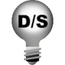 | |||
| SpotLight | Movable SpotLight | Toggleable SpotLight | Dominant SpotLight |
|---|
推奨される使用方法
たいていの光源については、基本光源クラスを使用すべきです。これには、PointLight (点光源)、SpotLight (スポットライト光源)、DirectionalLight (平行光源) があります。これらのクラスは、すべて precomputed lighting (事前計算された光源処理) を使用します。そのため、実行時のパフォーマンスへの影響が最小限に抑えられます。 動かす必要はないが、カラーや輝度、有効な状態を実行時に切り替える必要がある光源については、Toggleable (切り替え可能) 光源サブクラスを使用すべきです。これには、PointLightToggleable 、SpotLightToggleable 、DirectionalLightToggleable があります。これらのクラスは、実行時に、ピクセル単位の光源処理とともに precomputed shadow (事前計算されたシャドウ) を使用するため、実行時のパフォーマンスにわずかな影響しか与えません。 ほとんどのシーンについては、precomputed lighting (事前計算された光源処理) で得られるよりも高いクオリティの光源処理とともに precomputed shadow (事前計算されたシャドウ) を使用するような光源の数を、抑える必要があります。そのためには、Dominant (ドミナント) 光源サブクラスを使うのがよいでしょう。これには、DominantPointLight、DominantSpotLight、DominantDirectionalLight があります。これらのクラスは Toggleable 光源サブクラスと似ていますが、各オブジェクトが単一の Dominant 光源によってのみ影響を受けるように制限されている点が異なります。このため、Dominant 光源は、Toggleable 光源よりも実行時に効率が若干高くなります。詳細については、 ドミナントライト のページを参照してください。 光源を動かす必要がある場合は、Movable (可動) 光源サブクラスを使用するべきです。これには、PointLightMovable 、SpotLightMovable 、DirectionalLightMovable があります。これらのクラスは、実行時に毎フレームごとにシャドウイングと光源処理を計算します。したがって、実行時のパフォーマンスに及ぼす影響は最大となります。シャドウの種類
per-object dynamic shadow (オブジェクト単位の動的シャドウ)
非可動光源は、それが影響を及ぼす動的オブジェクトのために、per-object dynamic shadow (オブジェクト単位の動的シャドウ) を使用します。per-object dynamic shadow (オブジェクト単位の動的シャドウ) は、光源の視点から見たオブジェクトの深度バッファをレンダリングするとともに、それをワールドに投影します。光源からの距離が、投影されるシャドウ深度バッファにある深度よりも遠いピクセルは、シャドウになります。フィルターが使用されることによって、シャドウになる部分と光が当てられる部分の境界にソフトエッジを作ります。 次のスクリーンショットでは、飛行しているビークル (Cicada) が、ソフトな動的シャドウを橋の表面にキャストしています。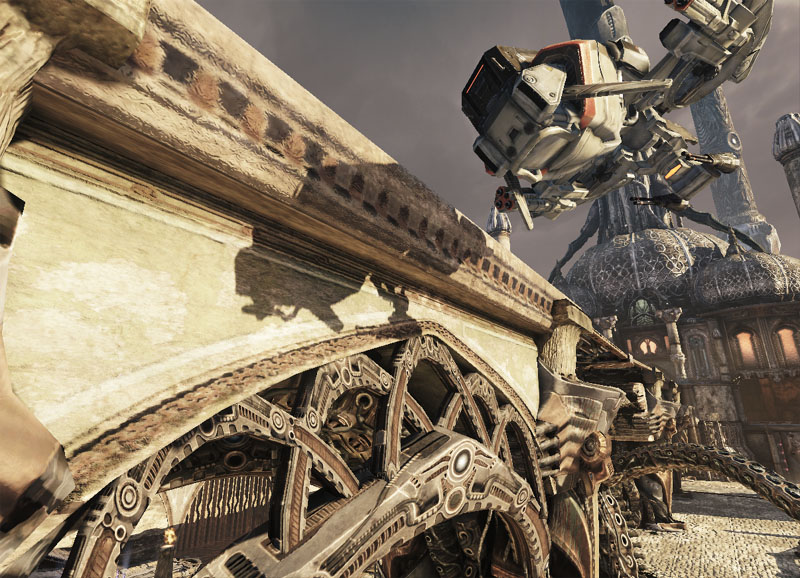
per-object dynamic shadow (オブジェクト単位の動的シャドウ) のクオリティとコストは、投影される深度バッファの錐台 (frustum) がスクリーン上でどのくらいの大きさであるかということに依存します。このこと自体は、さらに、動的オブジェクトのバウンディングボックスがどのくらい大きいかということに依存します。したがって、タイトなバウンディングボックスをもったオブジェクト上で、最もよく機能することになります。関連する物理アセットをもたない骨格メッシュは、ジョイントアニメーションに応じて実行時に変化しないルーズなバウンディングボックスをもつことになり、低いクオリティでありながらコストの高いシャドウができます。したがって、物理アセットをともなった骨格メッシュは、ジョイントアニメーションに基づいて毎フレーム計算されるタイトなバウンディングボックスをもつことになり、高いクオリティでありながらコストの低いシャドウができます。そのような理由により、物理ベースのアニメーションをもつか否かにかかわらず、あらゆる骨格メッシュには、 物理アセット? を作るべきです。 per-object dynamic shadow (オブジェクト単位の動的シャドウ) のために使用される錐台を表示するには、コンソールコマンドの show shadowfrustums (シャドウ錐台の表示) を使用するか、エディタのビューポートにある [Show] (表示) -> [Advanced Flags] (高度フラグ) メニューから [shadow frustums] (シャドウ錐台) オプションを選択します。 次のスクリーンショットでは、骨格メッシュに物理アセットが割り当てられていません。したがって、青いボックスで表示されている (見やすくするために黒い縁がつけられています) シャドウ錐台が大きく、非効率となっています。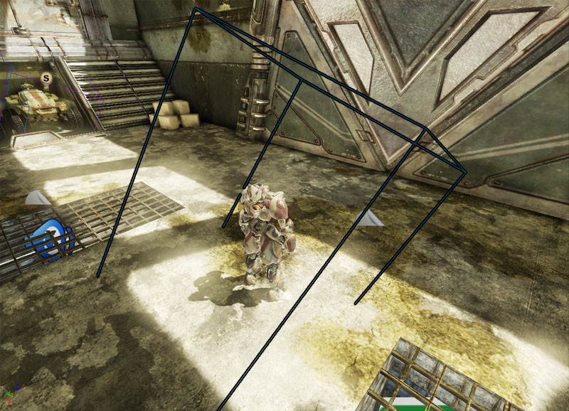
次のスクリーンショットでは、骨格メッシュに物理アセットが割り当てられています。したがって、青いボックスで表示されている (見やすくするために黒い縁がつけられています) シャドウ錐台が、タイトで効率的になっています。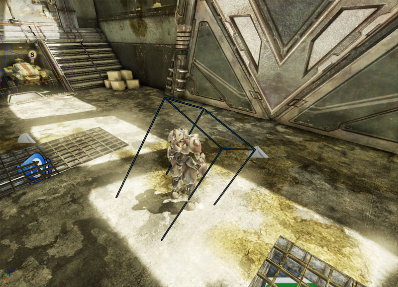
静的オブジェクトから動的オブジェクトにキャストされるシャドウを扱うために、非可動光源によって、第二のオブジェクト別投影シャドウの深度バッファが作られます。この深度バッファは、光源と動的オブジェクトの間に位置する静的オブジェクトから作成されます。 次のスクリーンショットでは、骨格メッシュの上に precomputed shadow (事前計算されたシャドウ) がキャストされています。 DynamicLightEnvironments (動的光源環境) が動的な骨格メッシュに割り当てられるようにする必要があります。その際、Use Boolean Environment Shadowing (bool 型環境シャドウイングの使用) のチェックを外すことによって、動的な事前シャドウイングを有効にします。(デフォルトでは、SkeletalMeshCinematicActor のために無効になっています)。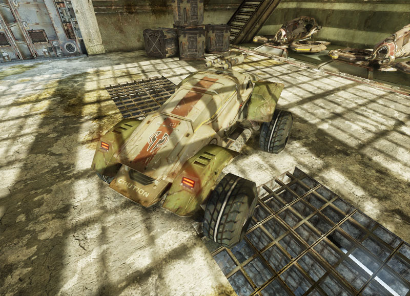
次のスクリーンショットでは、補間された静的メッシュの上に precomputed shadow (事前計算されたシャドウ) がキャストされています。DynamicLightEnvironments (動的光源環境) が補間された静的メッシュに割り当てられるようにする必要があります。その際、Use Boolean Environment Shadowing (bool 型環境シャドウイングの使用) のチェックを外すことによって、動的な事前シャドウイングを有効にします。(デフォルトでは、InterpActor のために無効になっています)。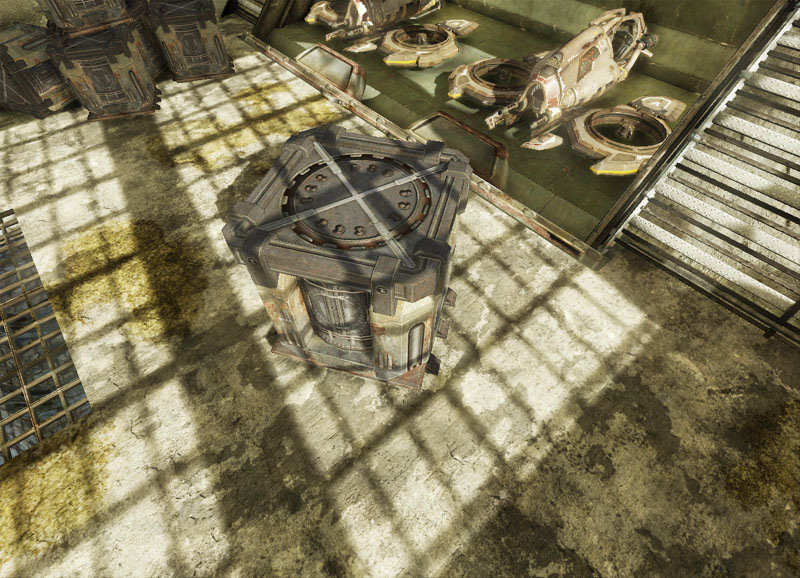
modulated (変調) シャドウ
per-object dynamic shadow (オブジェクト単位の動的シャドウ) は、modulated (変調) か normal (通常) のどちらかになります。 normal シャドウは、シャドウをキャストする光源による、シャドウの受け手 (receiver) への寄与をマスクします。一方、modulated シャドウは、modulated (変調した) シャドウカラーによって、受け手の最終的なカラーのみを変調します。静的光源は、modulated シャドウを使用することによって、per-object dynamic shadow (オブジェクト単位の動的シャドウ) と、このような静的光源が使用する precomputed lighting (事前計算された光源処理) とを結合させる必要があります。 次のスクリーンショットでは、normal のシャドウイングが適用されています。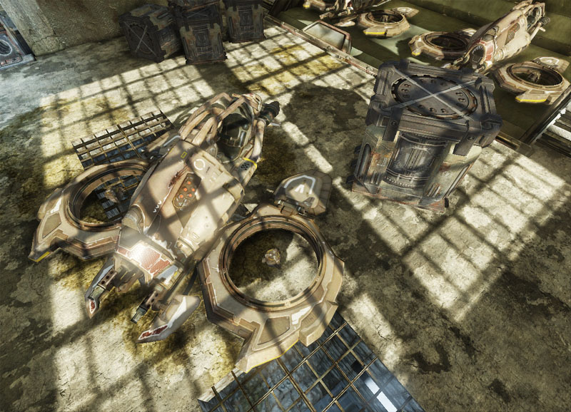
次のスクリーンショットでは、modulated のシャドウイングが適用されています。Mod Shadow Color が、0.f、0.f、0.f、1.f (黒) にセットされています。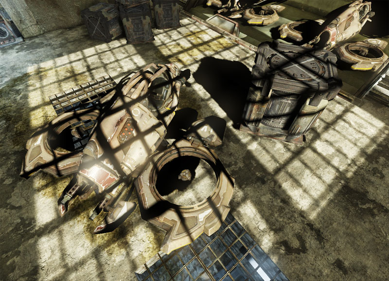
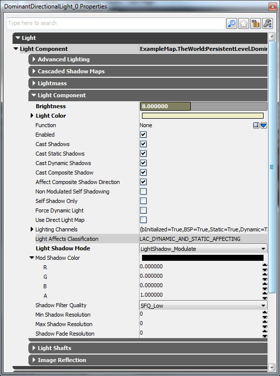
次のスクリーンショットでは、Mod Shadow Color が、1.f、0.f、0.f、1.f (赤) にセットされています。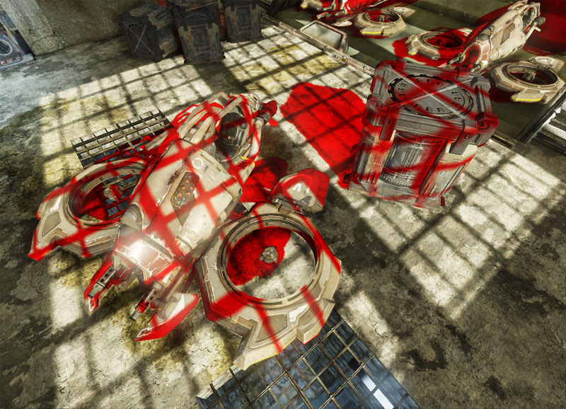
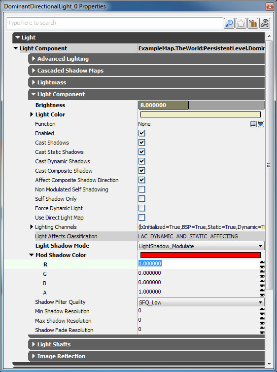
静的光源と toggleable (切り替え可能) 光源は、デフォルトで modulated シャドウに設定されています。一方、dominant 光源は、デフォルトで normal シャドウに設定されています。whole-scene dynamic shadow (シーン全域動的シャドウ)
可動光源については、whole-scene dynamic shadow (シーン全域動的シャドウ) が使用されます。シーン全域シャドウは、per-object dynamic shadow (オブジェクト単位の動的シャドウ) の投影されたシャドウ深度バッファと同じように機能します。ただし、各オブジェクトのために、投影されたシャドウ深度バッファは作成しません。その代わりに、シーン全体のために、一定数のシャドウ深度バッファを使用します。スポットライト光源は、単一のシャドウ深度バッファを使用します。点光源は、立方体に対応する 6 個のシャドウ深度バッファを使用します。平行光源は、視点を中心とする 1 個以上のカスケードされた (cascaded) シャドウ深度バッファを使用します。 次のスクリーンショットでは、可動点光源が whole-scene shadow (シーン全域シャドウ) をキャストしています。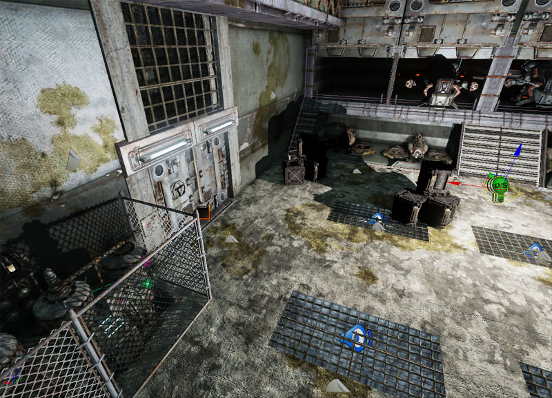
次のスクリーンショットでは、可動スポットライト光源が whole-scene shadow (シーン全域シャドウ) をキャストしています。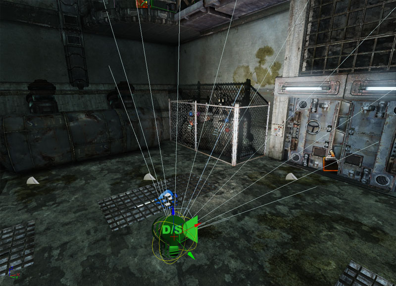
次のスクリーンショットでは、可動ドミナント平行光源が whole-scene shadow (シーン全域動的シャドウ) をキャストしています。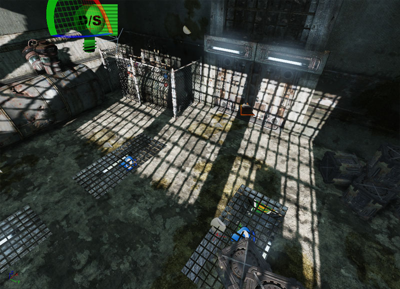
per-object dynamic shadow (オブジェクト単位の動的シャドウ) とは異なり、whole-scene dynamic shadow (シーン全域動的シャドウ) は変調 (modulate) できません。cascaded shadow map (カスケードされたシャドウマップ)
Dominant 平行光源では、シーン全域シャドウのために、カスケードされたシャドウ深度バッファを使用することができます。光源が非可動の場合は、カスケードされたシャドウ深度バッファと precomputed shadow (事前計算されたシャドウ) をブレンドすることができます。その際、近くのオブジェクトには、カスケードされたシャドウ深度バッファを使用し、遠くのオブジェクトには、precomputed shadow (事前計算されたシャドウ) を使用します。precomputed shadow (事前計算シャドウ)
Toggleable (切り替え可能) 光源は、precomputed shadow (事前計算シャドウ) を使用します。precomputed shadow (事前計算されたシャドウ) を保存する場合は、次のどちらかの方法を取ります。すなわち、光源をレンダリングする場合は、適用されるグレースケール マスクを使用して保存します。Dominant (ドミナント) 光源については、符号付き距離フィールドとして保存します。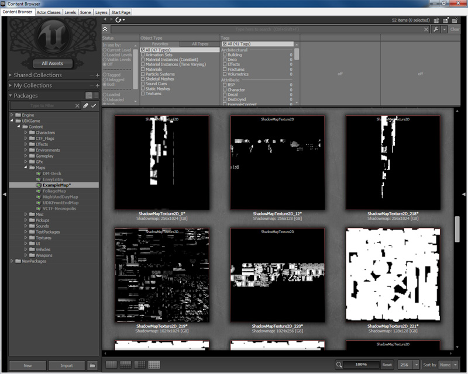
precomputed lighting (事前計算された光源処理)
静的光源は、静的オブジェクト上で precomputed lighting (事前計算された光源処理) を使用します。precomputed lighting (事前計算された光源処理) は、すべての静的光源を結合するため、光源を実行時に分離することができません。そのため、静的光源は、動的オブジェクトから modulated (変調された) オブジェクト単位のシャドウしかキャストすることができません。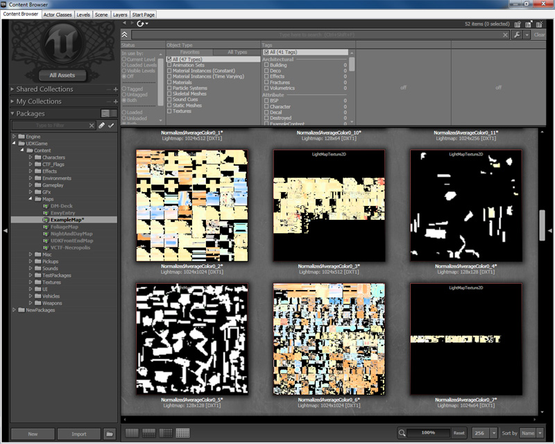
シャドウオパシティ
マスクされたマテリアルのオパシティは、全タイプのシャドウによって尊重されます。
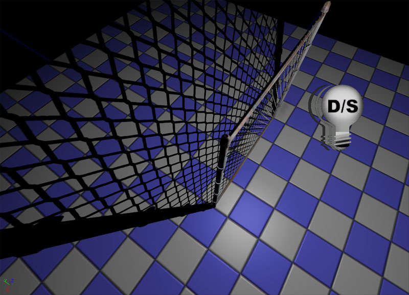
透過マテリアルのオパシティは、Toggleable (切り替え可能) 光源または静的光源から静的オブジェクトによってキャストされるシャドウについてのみ尊重されます。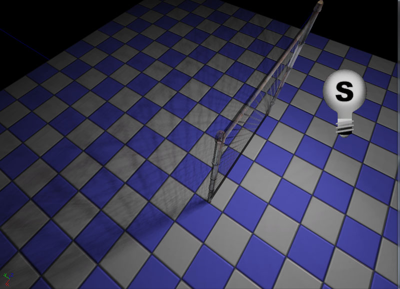
透過マテリアルに、マスクされたマテリアルとして動的シャドウをキャストさせるには、マテリアルの Cast Lit Translucency Shadow As Masked (光源処理された透過シャドウをマスクとしてキャストする) プロパティを true にセットするとともに、Opacity Mask (オパシティマスク) マテリアル パラメータを設定します。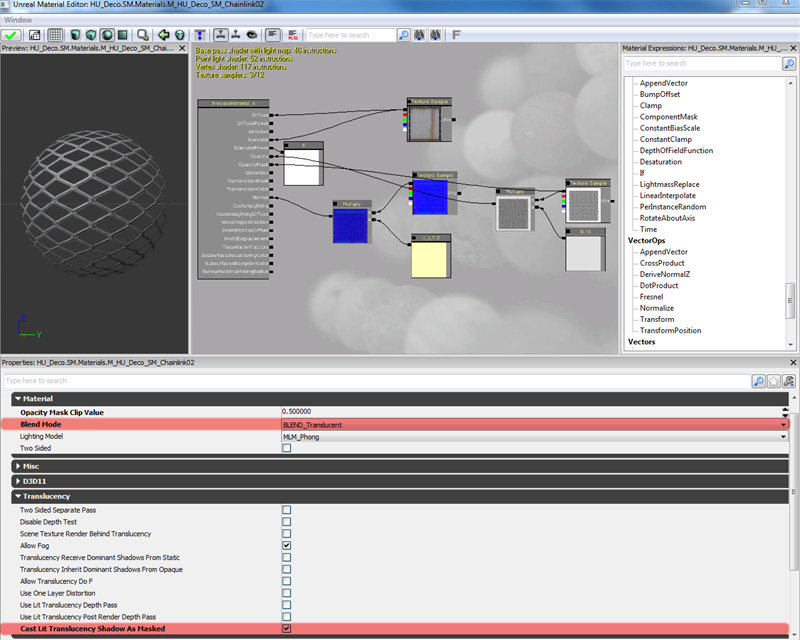
シャドウマップとライトマップの解像度
precomputed shadow (事前計算されたシャドウ) と BSP
BSP (バイナリ空間分割) のサーファスのために使用されるシャドウマップとライトマップの解像度を変更するには、1 つあるいは複数のサーファスを選択して、F5 キーを押します。これによって、[Surface Properties] (サーファスプロパティ) が表示されます。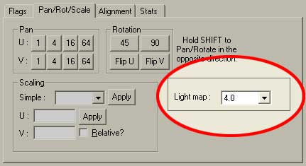
[ Pan/Rot/Scale ] (パン / 回転 / スケール) の下に、[ Light map ] (ライトマップ) 値があります。下の画像で示されているように、この値を低くすると、作成されるシャドウの解像度が上がります。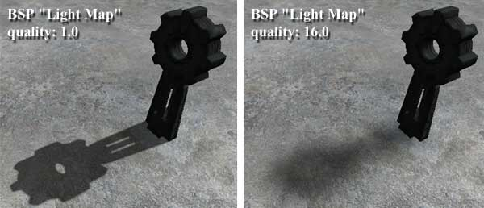
precomputed shadow (事前計算されたシャドウ) と静的メッシュ
precomputed shadow (事前計算されたシャドウ) は、静的ジオメトリ上にもキャストされます。デフォルトでは、頂点ごとにシャドウ係数が計算されます。シャドウの解像度を向上させるには、静的メッシュそれぞれについてシャドウマップを生成する必要があります。 シャドウマップでは、すべての UV データが一意でなければなりません。ミラーリングおよびタイリングは利用できません。静的メッシュの UV に、ミラーリングまたはタイリング、スタッキングがある場合は、新たに一意の UV セット を作成する必要があります。UV セットを複数作る方法の詳細については、 頂点ブレンドのチュートリアル のページを参照してください。 Static Mesh Editor (静的メッシュエディタ) で静的メッシュを開きます。 (Generic Browser (汎用ブラウザ) のウインドウ内でダブルクリックします)。必要な数値を LightMapResolution (ライトマップ解像度) に入れます。0 (デフォルト値) の場合は、シャドウマップが作成されません。 シャドウマップは、レベルファイルに含まれるメッシュのインスタンスごとに、個別に生成されます。これによって、著しいメモリの断片化が生じる可能性があるということに留意してください。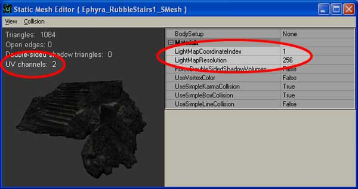
メッシュに複数の UV が存在する場合は、シャドウマップで使用したい UV セットを LightMapCoordinateIndex で指定します。デフォルト値は 0 で、オリジナルの UV セットを指しています。 UV チャンネルの数は、レンダリング ウィンドウ内の左上に表示されています。 次は、頂点ごとのシャドウイングとシャドウマップを比較したものです。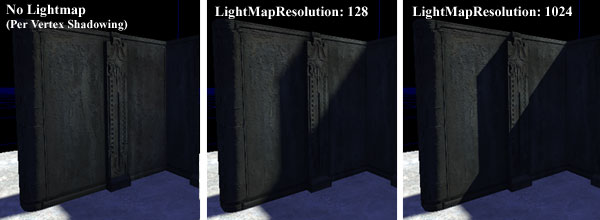
シャドウイングのオプション
| クラス | グループ | プロパティ | デフォルト値 | 説明 |
|---|---|---|---|---|
| DirectionalLightComponent (平行光源コンポーネント) | Cascaded Shadow Maps (カスケードされたシャドウマップ) | Whole Scene Dynamic Shadow Radius (シーン全域動的シャドウの半径) | 0 または 2000 | 視点を中心とした whole-scene dynamic shadow (シーン全域動的シャドウ) の半径です。これにより、precomputed shadow (事前計算されたシャドウ) が、カメラからの距離に基づいて置き換えられます。Radius (半径) が 0 の場合は、動的シャドウが無効になります。この機能は、現在のところ、Dominant 平行光源でのみサポートされています。 |
| DirectionalLightComponent (平行光源コンポーネント) | Cascaded Shadow Maps (カスケードされたシャドウマップ) | Num Whole Scene Dynamic Shadow Cascades (シーン全域動的シャドウのカスケード数) | 1 | 視点を中心とした whole-scene dynamic shadow (シーン全域動的シャドウ) の半径です。これにより、precomputed shadow (事前計算されたシャドウ) が、カメラからの距離に基づいて置き換えられます。Radius (半径) が 0 の場合は、動的シャドウが無効になります。この機能は、現在のところ、Dominant 平行光源でのみサポートされています。 |
| DirectionalLightComponent (平行光源コンポーネント) | Cascaded Shadow Maps (カスケードされたシャドウマップ) | Cascade Distribution Exponent (カスケード分布指数) | 4 | WholeSceneDynamicShadowRadius (シーン全域動的シャドウの半径) の比として、カスケード切り替えの距離に適用される Exponent (指数) です。指数が 1 の場合は、カスケードの切り替えが、解像度に比例する距離で行われることになります。指数が 1 よりも大きい場合は、カスケードの切り替えが、カメラにより近い距離で起こります。 |
| PointLightComponent (点光源コンポーネント) | Lightmass | Shadow Exponent (シャドウ指数) | 2 | 光源のエミッシブサーファスの半径です。(光源の影響度ではありません)。 |
| LightComponent (光源コンポーネント) | Light Component | Cast Shadows (シャドウのキャスト) | True | このプロパティは、光源がシャドウをキャストするか否かを制御します。 |
| LightComponent (光源コンポーネント) | Light Component | Cast Static Shadows (静的シャドウのキャスト) | True | 静的オブジェクトからのシャドウを光源がキャストするか否かを制御します。Cast Shadows (シャドウのキャスト) プロパティも True にセットされる必要があります。 |
| LightComponent (光源コンポーネント) | Light Component | Cast Dynamic Shadows (動的シャドウのキャスト) | Varies (変化する) | 動的オブジェクトからのシャドウを光源がキャストするか否かを制御します。Cast Shadows (シャドウのキャスト) プロパティも True にセットされる必要があります。 |
| LightComponent (光源コンポーネント) | Light Component | Cast Composite Shadows (合成シャドウのキャスト) | True | 合成 (composite) 光源処理 (有効化されたライト環境) をともなったオブジェクトからのシャドウを、光源がキャストするか否かを制御します。 |
| LightComponent (光源コンポーネント) | Light Component | Affect Composite Shadow Direction (合成シャドウの方向への影響) | True | bCastCompositeShadow が TRUE の場合、光源が合成シャドウの方向に影響を与えるか否かを制御します。 |
| LightComponent (光源コンポーネント) | Light Component | Non Modulated Self Shadowing (非変調セルフシャドウ) | False | このプロパティが有効であり、かつ、光源が modulated (変調) シャドウをキャストする場合、この光源からレンダリングされるシャドウのセルフシャドウイングが、normal のシャドウブレンディングを使用します。シャドウをライトマップ化された環境に保ちながら、セルフシャドウイングのクオリティが向上するため便利です。これが有効になると、両方のアプローチが結合された場合にほぼ等しいオーバーヘッドが生じます。 |
| LightComponent (光源コンポーネント) | Light Component | Self Shadow Only (セルフシャドウのみ) | False | 動的オブジェクトからのシャドウのみを、動的オブジェクト自身に光源がキャストするか否かを制御します。 |
| LightComponent (光源コンポーネント) | Light Component | Force Dynamic Light (動的光源の強制) | False | クラスにかかわらず、あたかも可動であるかのように光源がシャドウをキャストすべきか否かを制御します。 |
| LightComponent (光源コンポーネント) | Light Component | Light Shadow Mode (光源のシャドウモード) | Varies (変化する) | 光源のために適用するシャドウイングの種類です。 |
| LightComponent (光源コンポーネント) | Light Component | Shadow Filter Quality (シャドウフィルタのクオリティ) | SFQ_Low | 光源によってキャストされた動的シャドウのために使用するフィルターのクオリティです。 |
| LightComponent (光源コンポーネント) | Light Component | Mod Shadow Color (変調用シャドウカラー) | black | 光源から動的シャドウを受け取るピクセルを用いて変調する際に使用するカラーです。(ただし、光源が modulated (変調) シャドウをキャストする場合)。 |
| LightComponent (光源コンポーネント) | Light Component | Min Shadow Resolution (最小シャドウ解像度) | 0 | シャドウの被写体深度をレンダリングするために許容される最小次元 (単位 : テクセル) のオーバーライドです。これによって、シャドウのフェードも制御されます。シャドウの解像度が MinShadowResolution に達すると、完全にフェードアウトします。 値が 0 の場合は、デフォルトで SystemSettings の MinShadowResolution の値に設定されています。 |
| LightComponent (光源コンポーネント) | Light Component | Max Shadow Resolution (最大シャドウ解像度) | 0 | シャドウの被写体深度をレンダリングするために許容される最大平方次元 (単位 : テクセル) のオーバーライドです。 値が 0 の場合は、デフォルトで SystemSettings の MaxShadowResolution の値に設定されています。 |
| LightComponent (光源コンポーネント) | Light Component | Shadow Fade Resolution (シャドウのフェード解像度) | 0 | シャドウが超えるとフェードアウトし始める解像度 (単位 : テクセル) です。シャドウの解像度が MinShadowResolution に達すると、完全にフェードアウトします。値が 0 の場合は、デフォルトで SystemSettings の ShadowFadeResolutionの値に設定されています。 |
| LightComponent (光源コンポーネント) | Light Component | Use Direct Light Map (ダイレクト ライト マップの使用) | True | 静的光源上でこのプロパティが false にセットされると、静的光源は、 precomputed lighting (事前計算された光源処理) ではなく、事前計算されたシャドウイングを使用するようになります。 |
| Material (マテリアル) | Translucency (透過) | Cast Lit Translucency Shadow As Masked (光源処理された透過シャドウをマスクとしてキャストする) | False | 動的なシャドウにおいて、透過率ではなくマスクとして、マテリアルのオパシティ チャンネルを扱うか否かを制御します。 |
| PrimitiveComponent (プリミティブコンポーネント) | Lighting (光源処理) | Cast Shadow (シャドウのキャスト) | True | プリミティブコンポーネントがシャドウをキャストするか否かを制御します。現在のところ、このフラグと bCastDynamicSahdow の両方が有効にならない限り、動的なプリミティブは、静的なオブジェクトからシャドウを受け取りません。 |
| PrimitiveComponent (プリミティブコンポーネント) | Lighting (光源処理) | Cast Dynamic Shadow (動的シャドウのキャスト) | True | 事前計算されたシャドウイングではない場合 (例 : プリミティブが光源と動的オブジェクトの間に存在する場合)、プリミティブがシャドウをキャストするか否かを制御します。このフラグは、CastShadow が TRUE の場合にのみ使用されます。現在のところ、このフラグと CastShadow の両方が有効にならない限り、動的なプリミティブは、静的なオブジェクトからシャドウを受け取りません。 |
| PrimitiveComponent (プリミティブコンポーネント) | Lighting (光源処理) | Cast Static Shadow (静的シャドウをキャストする) | True | 光源がキャストする非動的なシャドウからのシャドウを、プリミティブがキャストするか否かを制御します。Cast Shadow が True にセットされている必要があります。 |
| PrimitiveComponent (プリミティブコンポーネント) | Lighting (光源処理) | Force Direct Light Map (ダイレクト ライト マップの強制) | False | 光源がライトマップを使用するように設定されていない場合であっても、このプリミティブに影響を与えるすべての静的光源について、ライトマップを使用するようにさせます。つまり、静的光源を妨害する動的オブジェクトからは、プリミティブがシャドウを受け取らないことになります。動的光源の場合には正しくシャドウイングします。 |
| PrimitiveComponent (プリミティブコンポーネント) | Lighting (光源処理) | Self Shadow Only (セルフシャドウのみ) | False | true の場合は、プリミティブはセルフシャドウイングのみを行い、他のプリミティブにはシャドウをキャストしません。他のプリミティブ上のシャドウが目立たない場合に最適化として利用することができます。 |
| PrimitiveComponent (プリミティブコンポーネント) | Lighting (光源処理) | Accepts Dynamic Dominant Light Shadows (動的ドミナント光源のシャドウを受け取る) | True | ドミナント光源のシャドウを受け取る必要がないオブジェクトのための最適化です。GPU 時間を大量に消費し、大きくテクスチャに依存しながらも、木のように目立ったシャドウをけっして受け取らないオブジェクトの場合に役立ちます。 |
| PrimitiveComponent (プリミティブコンポーネント) | Lighting (光源処理) | Cast Hidden Shadow (非表示のシャドウをキャスト) | False | TRUE になっている場合は、たとえ bHidden が TRUE にセットされていても、プリミティブがシャドウをキャストします。非表示とされている場合にプリミティブがシャドウをキャストするか否かを制御します。このフラグは、CastShadow が TRUE の場合にのみ使用されます。 |
| PrimitiveComponent (プリミティブコンポーネント) | Lighting (光源処理) | Cast Shadow As Two Sided (両面としてシャドウをキャスト) | False | あたかも両面のマテリアルであるかのように、プリミティブが動的シャドウをキャストすべきか否かを制御します。 |
| PrimitiveComponent (プリミティブコンポーネント) | Lighting (光源処理) | Use Precomputed Shadows (事前計算シャドウを使用) | Varies | プリミティブが事前計算されたシャドウを使用するのか、もしくは、事前計算された光源処理を使用させるかを制御します。 |